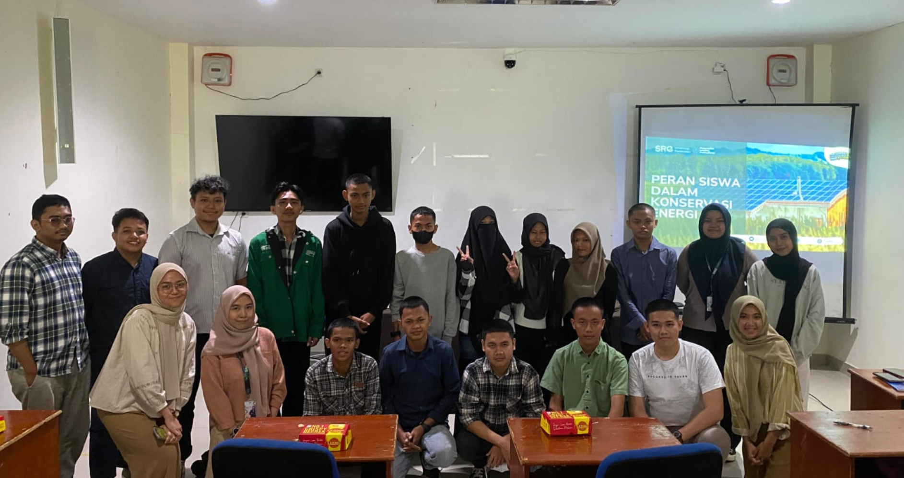
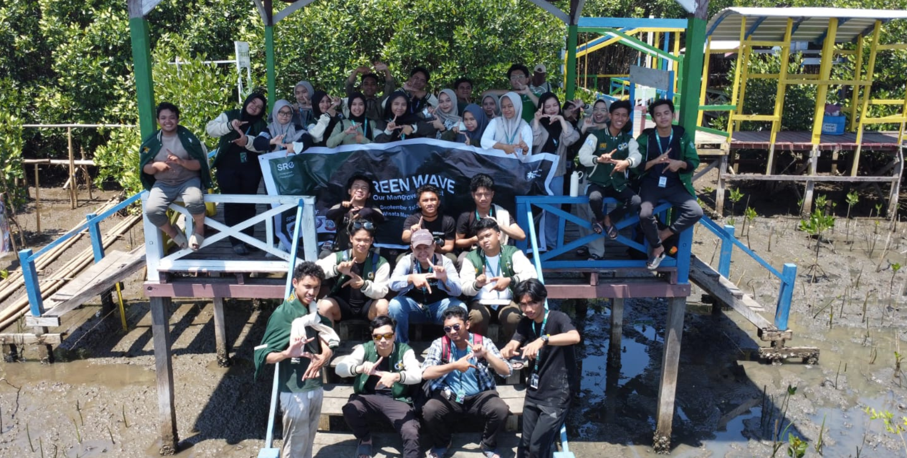

Energy Talk
Energy Talk is an engaging and informative platform designed to explore the future of energy through expert discussions. In response to the growing global demand for sustainable energy solutions, the series features two national sessions with ASEAN researchers and a KESDM delegate, followed by an international seminar with a Nottingham University Professor, offering a comprehensive and global perspective on sustainable energy solutions. This initiative provides valuable insights into innovative technologies, sustainable business models, and strategies to combat climate change. By fostering dialogue, collaboration, and global participation, the series aims to inspire action and promote energy sustainability and environmental preservation on a global scale.
Energy Talk 1: Harnessing Technology to Drive a Green Economy and Sustainable Business Models for Environmental Improvement
The world is undergoing a significant transformation towards a green economy, driven by the need to reduce environmental impact and promote sustainable development. The first session of the Energy Talk series explored how cutting-edge technologies can be leveraged to create sustainable business models that drive economic growth and environmental conservation. This session featured Yabes Kobrriantoro, Founder of Briga Sustainability, who shared his insights on the intersection of technology, business, and sustainability. Participants gained a deeper understanding of how innovative solutions can help reduce environmental risks while fostering a thriving green economy.
Energy Talk 2: International Energy Talks – Energy Transformation for Accelerating Decarbonization
The second session of the Energy Talk series focuses on the critical roles that renewable energy and energy efficiency play in addressing climate change. The world is currently facing a climate crisis and is under pressure to reduce carbon emissions. This seminar explores how energy transformation can accelerate the decarbonization process.
To limit the average global temperature rise, one of the key actions that can be taken is to reduce greenhouse gas emissions through decarbonization efforts. In general, decarbonization is the process of reducing or even eliminating all carbon emissions produced by human activities. There are various ways to support decarbonization, including shifting from the use of fossil fuels to low-carbon, renewable, and sustainable energy sources.
In this session, Ricardo Velazquez Lechuga, Director of the Energy Services Business Unit for the Americas at ACCIONA Energia, discussed how renewable energy sources, along with energy efficiency initiatives, can serve as powerful tools to achieve global decarbonization targets.
(Source: Documentation of SRE Universitas Hasanuddin)
Empowerement of Youth (EOY)
Youth Empowerment through the “Sekolah Energi Berdikari” (SEB): Collaboration between SRE Indonesia and Pertamina for SMK SMTI Makassar
Youth empowerment in the field of sustainability and energy is an important step toward forming a responsible generation capable of managing natural resources. In support of this vision, Sekolah Energi Berdikari (SEB) has been established as a collaborative program between SRE Indonesia and Pertamina. Through this initiative, young people can deepen their understanding of the energy sector and the importance of sustainability. One concrete example of SEB's implementation can be seen in the development of the Adiwiyata Program at SMK SMTI Makassar.
Sekolah Energi Berdikari (SEB) aims primarily to empower youth to manage energy resources wisely and sustainably. By integrating the Adiwiyata program into SEB, SMK SMTI Makassar has become an active example of a school that implements environmental education. The Adiwiyata program aims to create a school that cares for the environment and is able to manage natural resources wisely. Through training and briefings provided by SEB, students at SMK SMTI Makassar are prepared to become environmental ambassadors who not only understand the importance of maintaining sustainability but are also capable of implementing it both in schools and communities.
Through Sekolah Energi Berdikari (SEB), students gain not only knowledge but also leadership values and social responsibility. They are encouraged to become leaders with a vision to preserve the environment and manage energy resources efficiently.The success of the Sekolah Energi Berdikari (SEB) program is inseparable from the support of various parties, including SRE Indonesia, Pertamina, and, of course, the school itself. This collaboration highlights the importance of cooperation between the private sector and the educational sector in creating long-term solutions to energy and environmental challenges.

(Source: Documentation of SRE Universitas Hasanuddin)
Green Wave
Green Wave: Building Youth Collaboration for a Sustainable Environment
Green Wave was established to bring together local youth in an effort to protect and preserve the environment through solid cooperation. One of the main activities in this initiative was a mangrove planting event, which was attended by more than 150 participants, and the Green Wave Talks, which was attended by around 200 people.
Green Wave Talks aimed to bring together various stakeholders, including academics, technologists, and youth, to discuss steps that could be taken to support environmental sustainability. Through this event, SRE UNHAS presented various perspectives from experts and activists who care about environmental issues, particularly those related to mangrove ecosystems.
The Green Wave Talks event featured three speakers who discussed the theme “Mangroves: Bridging Science, Technology, and Youth for a Sustainable Future” from various perspectives. The following are the key topics that were delivered by the speakers:
The Importance of Mangrove Ecosystems in Maintaining Environmental Balance: The first speaker explained how important mangrove ecosystems are in maintaining environmental balance and how recent research highlighted their crucial role in mitigating climate change.
Innovative Technologies in Mangrove Conservation and Restoration: The second speaker discussed innovative technologies that could be used to monitor and conserve mangrove forests. These technologies have great potential to support mangrove conservation and restoration efforts more effectively and efficiently.
The Role of Youth in Mangrove Conservation for a Sustainable Future: The third speaker focused on how youth could contribute to mangrove conservation and why youth engagement is crucial for a sustainable future.
Green Wave Talks was not just a discussion event, but also a platform to build greater collaboration in facing environmental challenges, especially those related to mangrove ecosystems. Through this event, it was hoped that greater awareness would be raised about the important role mangroves play in environmental sustainability and how youth could contribute to their preservation.
The Green Wave initiative, through activities such as mangrove planting and discussions involving experts, further demonstrated its commitment to building a greener and more sustainable future. If you wanted to be part of this movement, you should not have missed the opportunity to join Green Wave Talks and become part of a larger change.

(Source: Documentation of SRE Universitas Hasanuddin)
SRE Goes to School
SRE Goes to School is a program designed to educate high school students in South Sulawesi about climate change and environmental issues. The program aims to increase their awareness and understanding of the impacts of climate change and the importance of renewable energy as a solution to the global environmental crisis.
With a comprehensive approach, this program focuses on theory and encourages students to engage in real-world action. One of the main activities is the Climate Action Campaign, where students are encouraged to create campaigns that educate the surrounding community on the importance of environmental conservation and eco-friendly energy sources. Through this program, students gain knowledge and skills to work together in creating solutions that can be applied within their communities.
With this initiative, it is hoped that students will become change agents who care about the planet’s sustainability. They are expected to incorporate environmental values into their daily lives and spread this awareness to others, contributing to global efforts to combat climate change.
(Source: Documentation of SRE Universitas Hasanuddin)